大家好，我是小林。
用 Claude Code 的人现在是真的多，但我发现一个挺普遍的现象。
大部分人的用法，还停留在「打开终端，敲需求，等它干完」。
每次开新会话，都要把项目背景重新交代一遍，我们用什么框架、构建命令是什么、哪些文件不能动。交代完了它干得挺好，可一关掉，下次又是从零开始。
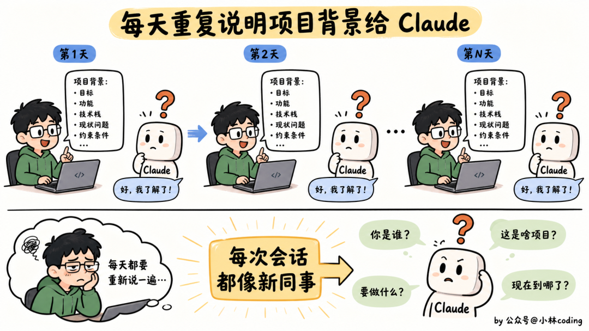
其实 Claude Code 早就给你留好了一整套解决方案，CLAUDE.md、Skills、Subagents、MCP、Hooks、Plugins，一共六样东西。
所以这篇就来聊聊 「Claude Code 工程化」这个事情。
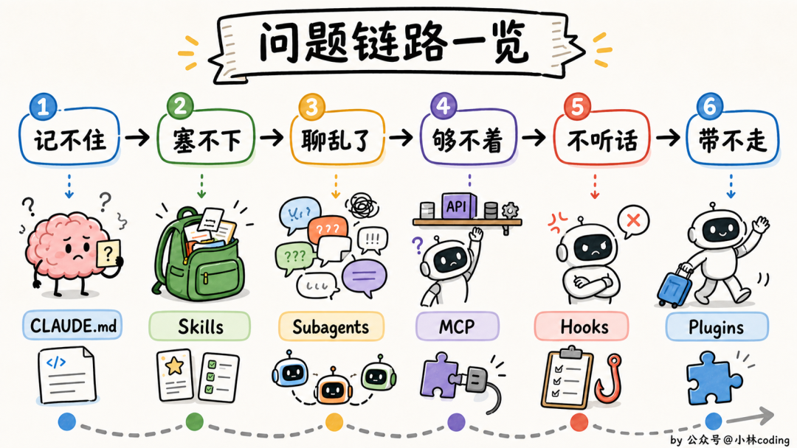
文章有点长，建议先收藏再看。
────01｜Claude 怎么才能记住你的项目？────
每次新会话都要重新交代一遍？
先从最扎心的问题开始。
你接手了一个后端项目，用 Claude Code 干活。第一天你跟它说，项目还停在 JDK 8，构建用 mvn 走 package，core 模块是祖传代码别动。它记住了，干得漂亮。
第二天开个新会话，让它加个接口。它上来就写 Stream.toList() 和 record，编译直接爆红，顺手还把 core 模块「重构」了一把。
你血压上来了。但冷静想想，这不怪它。
大模型这东西，本身压根没有记忆，每次会话都是一张白纸。你昨天说的话，存在昨天那个会话的上下文里，会话一关，什么都没留下。
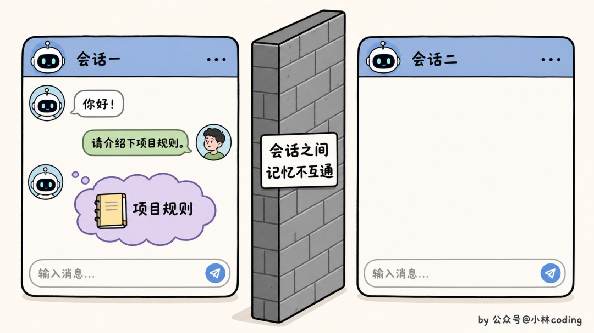
那怎么办？Claude Code 给的答案简单到有点朴素，写个文件。
你在项目根目录放一个叫 CLAUDE.md 的 markdown 文件，每次开新会话，Claude Code 都会自动把它读进来，塞进对话的最前面。你后面说的每一句话，都是在这份文件打底的前提下被理解的。
说白了就是给新员工的入职手册。人还没开始干活，规矩先看一遍。你不用每天重新培训，因为培训材料就钉在工位上。
CLAUDE.md 放哪、怎么被加载？
CLAUDE.md 不止能放一个地方。
放在 ~/.claude/CLAUDE.md 的是全局配置，你所有项目都会加载，适合写个人偏好，比如「回答用中文」「commit 信息别写太长」。
放在项目根目录的是项目配置，也是最常用的一层，写这个项目的技术栈、命令、规范。
还可以放在子目录里。这一层有点讲究，它不是启动就加载的，而是等 Claude 读到那个子目录下的文件时才带进来。大项目里各模块规范不一样，就可以各放各的，互不干扰。
三个层级摆在一起看，就是这么个结构。
还拿前面那个 Java 项目说。个人偏好写在全局那份里，走到哪个项目都带着。JDK 版本、构建命令这种项目级规矩写在根目录。web 模块有自己的接口规范，core 模块有一堆「别动」的禁令，各写各的，Claude 干到哪个模块，哪份规矩才进场。
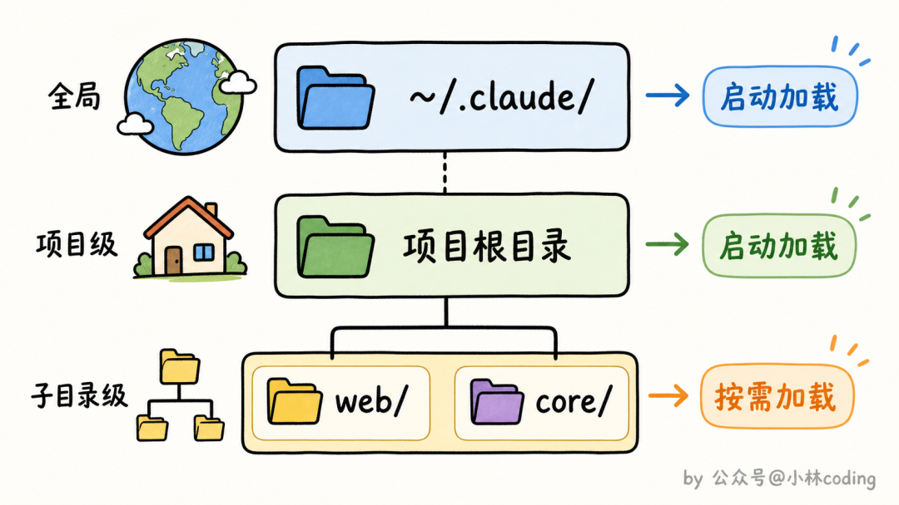
对了，除了你手写的 CLAUDE.md，Claude Code 还有一套自动记忆。它会在干活过程中自己记下一些经验，比如「这个项目的构建产物在 dist 目录」「用户喜欢先写测试」，存到自己的记忆目录里，下次会话自动想起来。
你写规矩，它记经验，两边凑一块才算全。
一份像样的 CLAUDE.md 长什么样？
光说不练没感觉，我把自己一个项目里的 CLAUDE.md 抽几段出来给你看。
没什么花头，就是大白话写规则。但有几个讲究。
命令要写全，别写「跑一下测试」，要写 mvn test -pl web 这种能直接复制执行的。禁令要写死，「尽量不要改」这种软话没用，就写「不许改」。
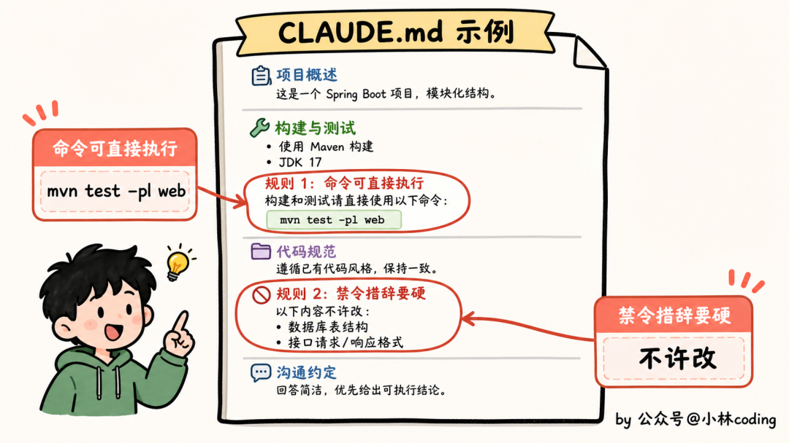
那么问题来了，什么才配写进 CLAUDE.md？我的标准就一条，每次会话都用得上的才留下。
我见过有人把整个架构文档、接口文档全贴进 CLAUDE.md，写了一千多行，自我感觉很充实。结果 Claude 该忘的还是忘。因为这个文件是每次会话都全量加载的，你塞得越多，真正重要的规则就被稀释得越狠。
CLAUDE.md 是入职手册，不是公司图书馆。
但这样一来，新的问题就冒出来了。
那些不是每次都用、但用的时候很重要的东西，往哪放？比如一整套 code review 的检查清单，比如发布流程的操作步骤。塞进 CLAUDE.md，每次会话都白白吃掉一堆上下文。不写，用的时候它又不知道。
这就轮到六件套里的第二样登场了。
────02｜不常用的知识该往哪放？────
为什么不能全塞进 CLAUDE.md？
先算一笔账。
Claude 的上下文窗口是有限的，就当是它的工作记忆，装满就没地方了。CLAUDE.md 里的每一个字，每次会话都要占一份工作记忆，不管这次任务用不用得上。
你写了三千字的 code review 清单进去，结果今天的任务是改个文案错别字。这三千字照样加载，照样占地方，照样分散它的注意力。
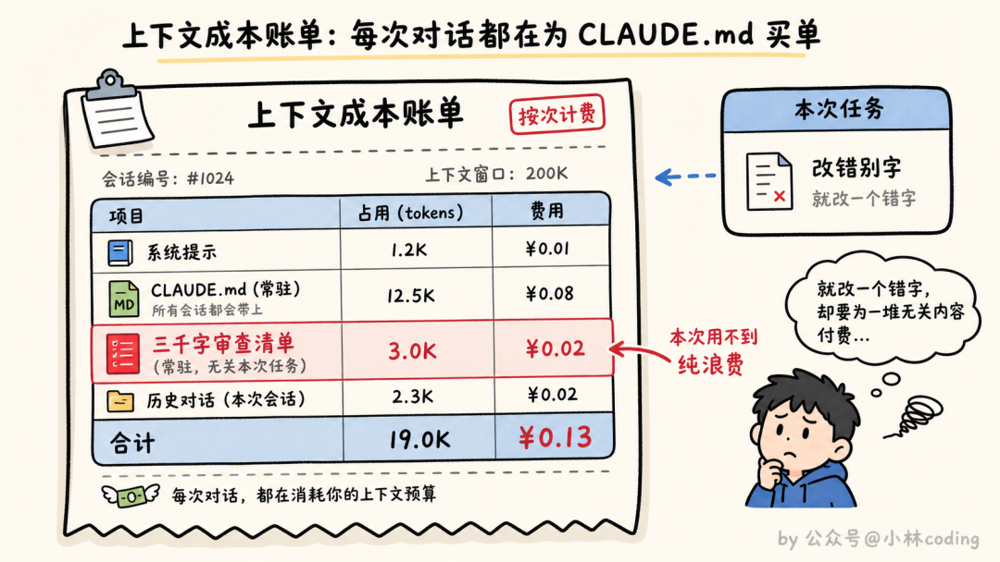
说实话，这就跟你入职第一天，主管把公司所有部门的操作手册全打印出来让你背一样。你要的是「用到的时候知道去哪查」，而不是全背下来。
Claude Code 给这个问题的答案叫 Skill。
一个 Skill 长什么样？
Skill 的设计，我第一次看懂的时候真有点想拍大腿。核心就一个点，拆两层加载。
每个 Skill 是一个文件夹，里面放一个 SKILL.md，文件开头有一段 frontmatter，就是用两条横线包起来的元信息，里面有名字和一句话描述。
启动的时候，Claude 只加载所有 Skill 的「一句话描述」，正文一个字都不读。等你真的提出相关任务，它发现描述对得上，才去把正文完整读进来。
启动时 Claude 眼里的 Skill 库，其实就是一张这样的单子。
三行描述，几十个字，每个 Skill 背后的完整正文一个字都还没进来。
CLAUDE.md 是全文背诵，Skill 呢，记住书名就行，用时再翻书。
一个描述几十个字，你装二十个 Skill，常驻成本也就千把字。但每个 Skill 背后可以挂几千字的正文，甚至还能在文件夹里附带参考文档和脚本。书多了，书架没变重，大概就是这么个意思。
很多同学估计就问了，装了这么多 Skill，Claude 怎么知道什么时候用哪个？
大多数时候你不用管，你说「帮我 review 这个改动」，它扫一眼描述列表，发现有个 Skill 管这事，就自己加载了。你也可以直接点名，输入斜杠加名字，比如 /code-review，强制唤起。
举个例子，把 code review 清单做成 Skill
我把一套 review 流程做成了 Skill，放在项目的 .claude/skills/code-review/ 目录下，SKILL.md 大概长这样。
frontmatter 里那句 description 是整个 Skill 的门面，Claude 全靠它判断这个 Skill 什么时候该被唤起，所以要写清楚「什么时候用」。
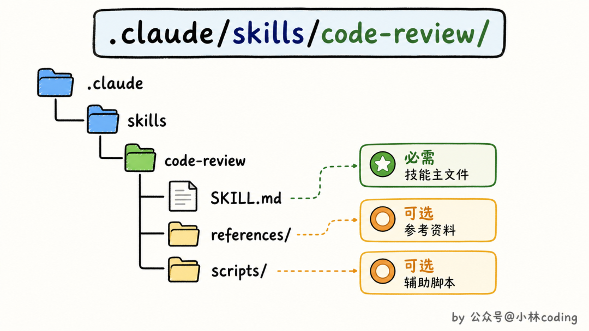
装上之后效果很直接。平时聊天，这套清单完全不占地方。一旦我说「看下这次的改动有没有问题」，它就把清单加载进来，按团队的标准逐条过，输出格式都是统一的。
记忆的问题，到这算是解决得七七八八了。常用的进 CLAUDE.md，专项的做成 Skill。
但你真拿它干重活的时候，会撞上另一堵墙。
比如让它做一次全仓库的安全审查。它吭哧吭哧搜了几十个文件，读了一堆代码，每一次搜索结果、每一段文件内容，全都堆在你的主对话里。审查完了，你想接着聊点别的，发现它开始犯糊涂了，前面说过的话它记不清了。
上下文被垃圾信息灌满了。
────03｜怎么让 Claude 变成一支小团队？────
主对话为什么越聊越笨？
这个现象很多人都遇到过，会话用久了，Claude 明显变笨。
原因不玄乎。上下文窗口就那么大，你让它搜索文件、分析日志，这些动作产生的中间信息，搜到的每个文件路径、读过的每段代码、跑命令的每行输出，全都留在对话里。
真正有价值的可能就是最后那三行结论，但为了得出这三行，它往上下文里塞了几万字的过程垃圾。
窗口快满的时候，要么旧内容被压缩丢失，要么新任务没地方施展。你精心写的 CLAUDE.md 规则，也在一堆日志输出里被淹没了。
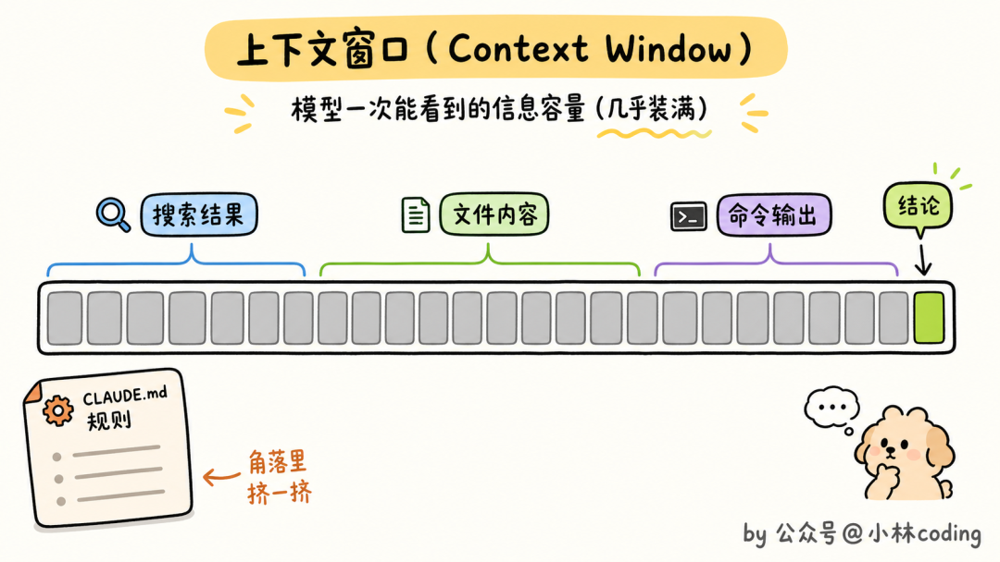
人类团队怎么解决这个问题？主管不会自己扎进日志里逐行翻，他会把活派给组员，「你去查一下昨晚的报错，查完给我个结论」。
组员翻了三小时日志，主管只收到一句「是缓存节点内存溢出，建议调大驱逐阈值」。过程留在组员那里，结论进入主管的脑子。
Subagent 干的就是组员这个角色。
主对话把任务派出去，Subagent 在一个完全独立的上下文里干活，搜索、试错、翻文件随便折腾，都污染不到主对话。干完了，只把汇总结果交回来。
更妙的是可以并行。比如安全漏洞、性能隐患、测试覆盖，三路检查互不依赖，派给三个 Subagent 同时跑，主对话就在那等结果，效率直接翻倍。
Subagent 是怎么配出来的？
配置方式跟 Skill 一脉相承，也是放文件。项目的 .claude/agents/ 目录下，一个 markdown 文件就是一个 Subagent。
文件分两截。frontmatter 写元信息，名字、什么时候用、能用哪些工具、跑哪个模型。正文写它的系统提示，相当于给这个「组员」的岗位说明书。
frontmatter 里我最喜欢 tools 这个字段。审查代码的 agent，你就只给它读文件和搜索的权限，不给写权限，它想改代码都改不了，天然安全。
model 也很实用。翻日志、跑批量搜索这种体力活，指定用便宜快速的模型，需要深度推理的分析再上贵的。一支团队里有主力有助手，成本就压下来了。
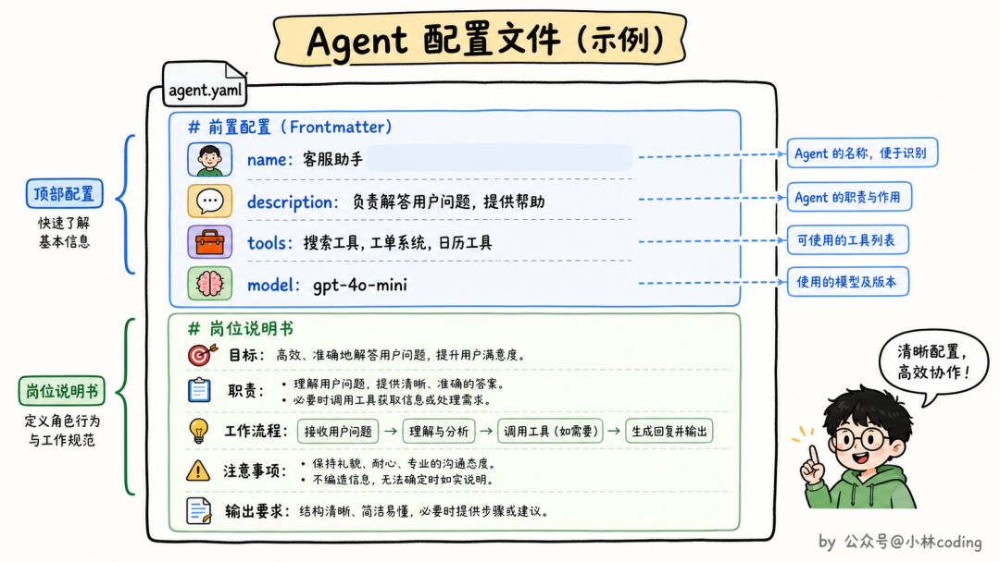
举个例子，一个 code-review 小分队成员的配置
注意最后一句，「只输出问题列表，不要贴大段代码原文」。这是 Subagent 的精髓，它在自己的上下文里可以读几万行代码，但交回主对话的必须是提纯后的结论。
那是不是什么活都该拆出去？还真不是。
适合拆的是「过程重、结论轻」的任务，大范围搜索、日志分析、专项审查。反过来，你们正在反复讨论的方案就别拆，拆出去 Subagent 两眼一抹黑，还得重新交代半天，得不偿失。
这个度我也是拆错过几次才摸到的。有一次把一个改到一半的需求丢给 Subagent，它交回来的东西驴唇不对马嘴，从那以后我只往外派「查清楚一件事」这种边界干净的活。
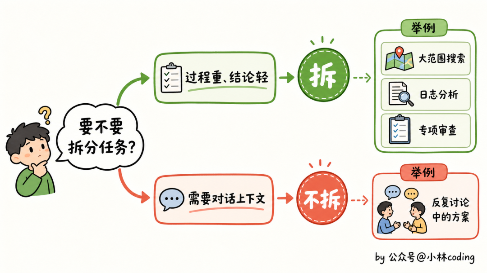
你的 Claude Code 现在有记忆、有专项知识、还带了一支小团队，像模像样了。
但它还有个先天残疾，所有能力都圈在本地这台机器上。你让它「看看 GitHub 上那个 PR 有什么问题」，它一脸诚恳地告诉你，我无法访问外部网站，你可以把内容粘贴过来。
一个连 PR 都摸不到的审查员，清单写得再好也白搭。
────04｜Claude 怎么够得着外部系统？────
会「说」不会「做」是什么意思？
有个事情很有意思。你问 Claude 怎么用 GitHub 的接口拉 PR 列表，它能给你写出完整代码，参数、鉴权、分页全都对。
但你让它「直接帮我拉一下」，它做不到。
知识它有，手没有。模型再聪明，它也只是在生成文字，没有一条真实的通道让它去调用外部系统。数据库、GitHub、公司内部的工单系统，它全都够不着。
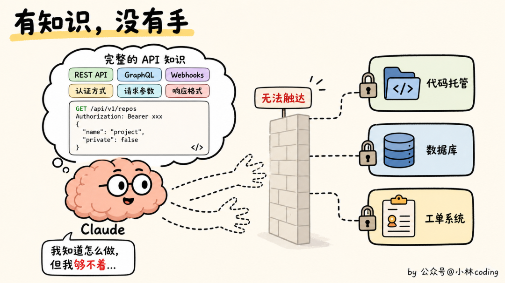
早期大家的解法是各写各的插件，OpenAI 一套接法，Claude 一套接法，每个工具还得为每家 AI 单独适配一遍。工具方累死，用户也乱死。
后来 Anthropic 牵头出了个协议，就是 MCP，Model Context Protocol。它干的事说人话就是，给 AI 和外部工具之间定一个统一的插口。工具方照着协议实现一个 MCP Server，任何支持 MCP 的 AI 应用都能直接插上用，不用再各家单独适配。
跟 USB-C 一个道理。以前每个手机一种充电口，现在一根线走天下。
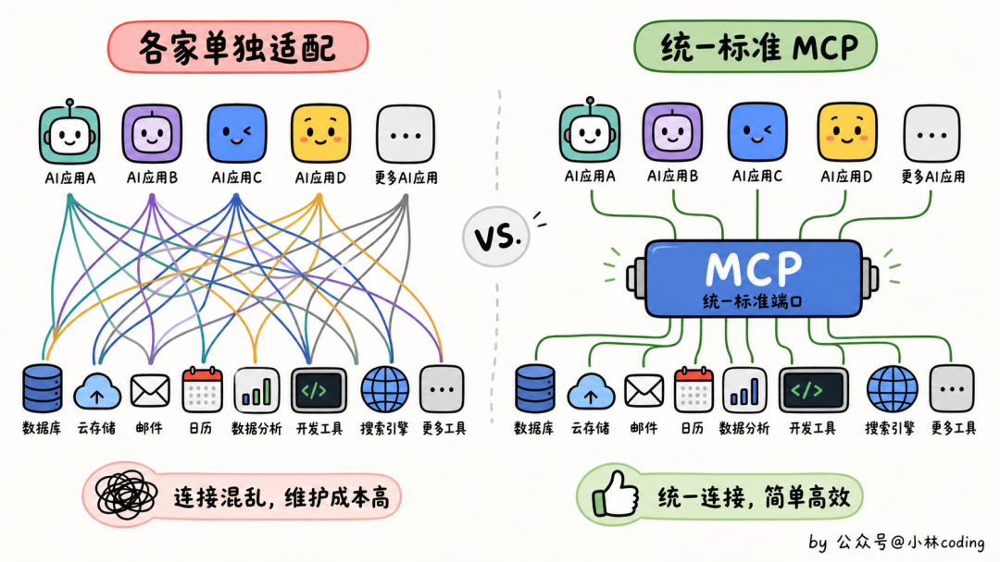
MCP 协议到底约定了什么？
架构上就两个角色。Claude Code 这边是 Client，工具那边是 Server。
Server 对外声明自己有哪些本事，最主要的就是 tools，一组可以被调用的工具。每个工具带着名字、说明和参数定义。拿 GitHub 的 Server 来说，Claude 连上后拿到的工具清单大概是这个样子。
任务需要时，Claude 从清单里挑一个发起调用，Server 执行完把结果传回来。
Server 装在哪都行。跑在你自己机器上的就是个本地进程，走标准输入输出通信，适合操作本地资源。也可以部署在服务商那边，走 HTTP 连过去，GitHub、Notion 这些官方服务基本都提供了。
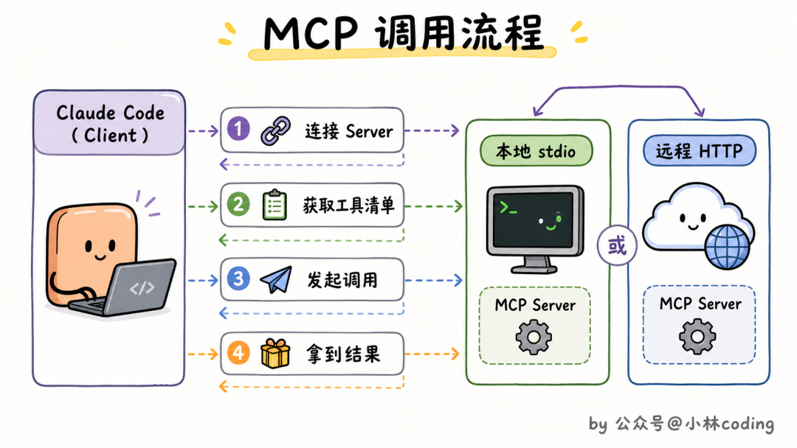
看到这估计有同学就问了，这不就是工具调用吗，跟 Skill 有什么区别？
还真不是一回事。Skill 给的是知识和流程，说明书那种东西。你照着说明书能知道怎么做，但说明书自己不会动手。真能伸出去的手，是 MCP 给的。
实际用起来，这俩经常是配合着用的。比如 Skill 里写着「审查完把结果提交到工单系统」，这是流程。真到提交那一步，动手的是 MCP。
对了，还有一个边界问题值得一提。如果一个工具本来就有好用的命令行，比如 git、gh，Claude 直接在终端里敲命令就行，不一定非要 MCP。
MCP 真正的价值在那些没有现成命令行、或者需要保持长连接和鉴权状态的系统上。
举个例子，接上 GitHub 之后能干什么
接入就一条命令的事，带上你在 GitHub 上生成的访问令牌。
连上之后，感受一下前后差别。
以前你说「看下 128 号 PR 改了什么」，它说我访问不了。现在同样一句话，它直接调用 MCP 工具把 PR 的改动拉下来，结合你 Skill 里的审查清单逐条过，最后还能把审查意见评论回 PR 上。
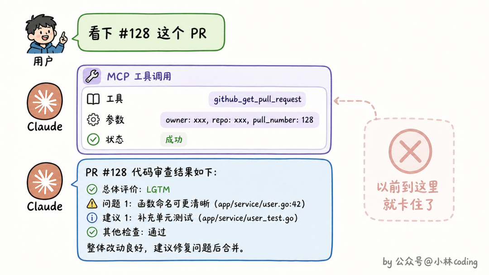
你看，链路这就通了。
不过用得越深，你会发现一个更隐蔽的问题。
我在 CLAUDE.md 里写了「每次改完代码要跑一遍格式化」。十次里有八次它照做，剩下两次，忘了。不是它态度不好，是提示词这个东西，本质上就管不了「必须」。
────05｜规则怎么才能次次生效？────
写在提示词里的规则，为什么会被无视？
怎么说呢，这个问题我想了挺久才想明白，想明白之后看很多事都顺了。
CLAUDE.md 也好，Skill 也好，里面写的所有规则，最终都是变成文字交给模型去「理解并遵守」。而模型是概率生成的，它大概率会遵守，但没有任何机制保证百分之百。
上下文一长，规则就被稀释了，任务再一复杂，它的注意力早被别的东西抢走了。于是就出现「十次有八次照做」的情况。
对了，这跟开篇那个「失忆」不是一回事。那是规则压根没进会话，这回规则明明就摆在上下文里，它还是能漏。
说白了，提示词是建议，不是法律。你在员工手册里写「下班要锁门」，员工大部分时候记得，但总有忘的那天。真想万无一失，你装的是门禁系统，人走门自动锁，不依赖任何人的自觉。
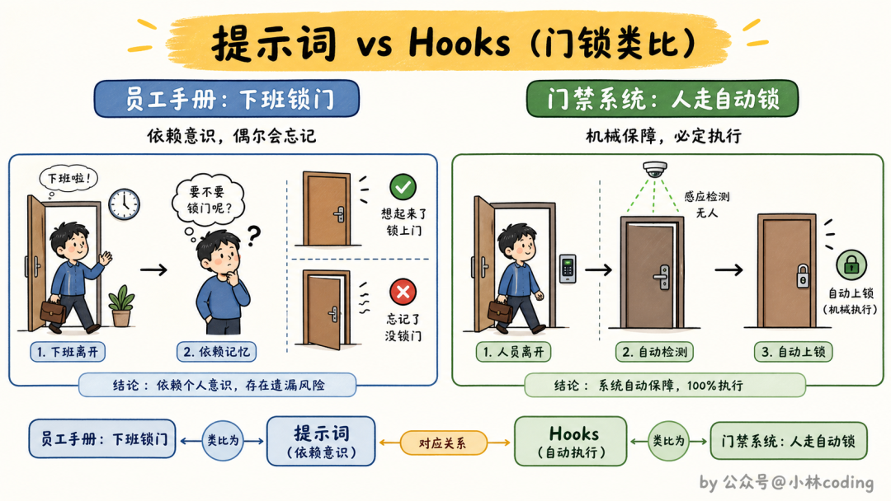
Hooks 就是 Claude Code 的门禁系统。
它让你在 Claude 工作流程的关键节点上，挂一段自己的 shell 命令。节点一到，命令就跑，没有商量的余地。这里压根没有模型什么事，它理不理解、自不自觉，都不影响这段命令执行，纯粹是程序层面的强制触发。
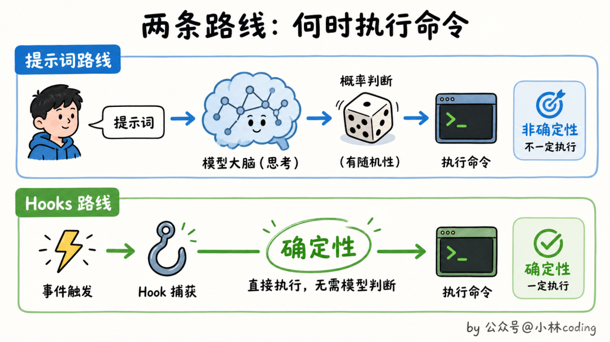
Hook 挂在哪些环节上？
Claude Code 把一次会话的生命周期切出了一串事件。会话启动、你提交提示词、每次工具调用之前、工具调用之后、Claude 准备结束回复，这些时机全都可以挂 Hook。
用得最多的是工具调用前后这两个。调用前的 Hook 能做拦截，检查这次操作合不合规，不合规直接摁住不让执行。调用后的 Hook 做善后，比如改完文件自动跑格式化。
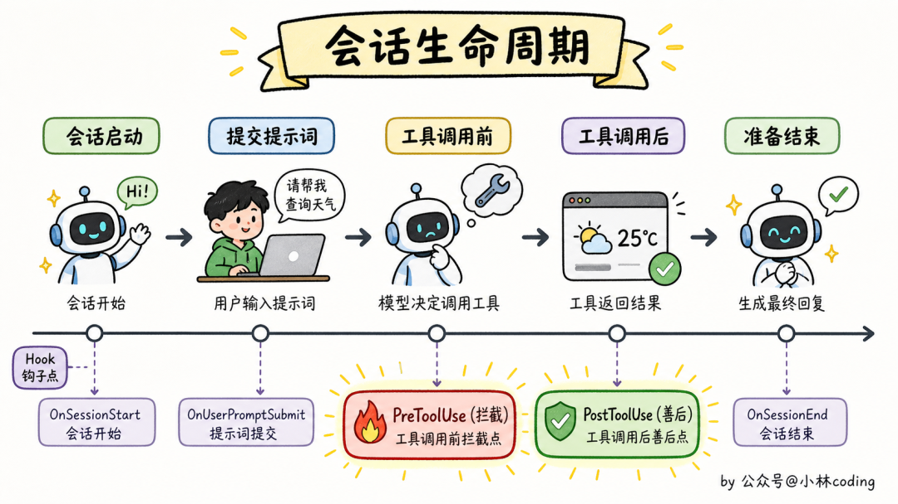
配置写在 settings.json 里，就两样东西要认识。matcher 负责筛选，比如只匹配「编辑文件」这类工具调用。command 就是要执行的命令，事件命中就跑。
命令的退出码是有讲究的。退出码是 0，一切正常放行。退出码是 2，这次操作直接被拦截，命令的报错信息还会回传给 Claude，它看到之后会自己调整做法。
说人话就是，门禁不光能拦人，还能告诉他为什么被拦、该走哪个门。
举个例子，自动格式化和敏感文件保护
善后型的最常用，比如改完文件自动格式化。
拆开看很好懂。PostToolUse 是挂载点，工具调用之后触发。matcher 筛出「编辑或写入文件」这类操作。command 里 jq 那一截看着唬人，讲真我第一次配的时候也愣了一下，其实就是从事件信息里抠出这次改的是哪个文件，抠出来直接喂给 prettier。
此后任何文件被编辑，prettier 必然跑一遍，我再也没在 CLAUDE.md 里念叨过格式化的事。
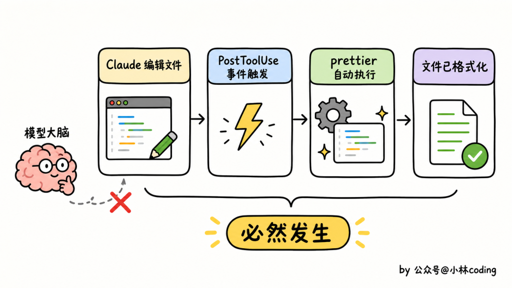
格式化是让它多做事，还有一类正相反，是不许它做的事，比如动敏感文件。这次把 Hook 挂在工具调用之前。
protect.sh 里就几行 shell。
逻辑一眼就能看明白。取出这次要动的文件路径，发现命中 .env 或者密钥文件，就带着报错信息用退出码 2 退出。
效果很有意思，Claude 的操作被摁住，它收到报错信息「敏感文件禁止修改」，然后它会跟你说，这个文件被保护了，我换个方案。整个过程你一个字都不用说。
到这里，六件套就差最后一块拼图了。你手上这套 Claude Code，有记忆、有知识库、有团队、有外部通道、还有铁的纪律。
然后现实问题来了。这一摊配置，CLAUDE.md、几个 Skill、几个 Subagent、MCP 接入、一串 Hooks，全都散落在这个项目的各个角落。
下周你开新项目，全得手动搬一遍。同事看你用得好想抄作业，你只能把文件一个个发给他。过两个月你更新了审查清单，他那份还是旧的。
────06｜这套配置怎么打包带走？────
换个项目就要重配一遍？
配置多了之后，分发就成了真问题。
手动复制的毛病，干过的都懂，容易漏、版本乱。你自己的三个项目里躺着三个版本的 code-review Skill，哪个是最新的，你自己都说不清。团队里更麻烦，每个人抄作业的时间点不一样，手上的配置千差万别，出了问题都没法对齐。
这个问题在软件行业早就被解决过一次了，答案叫包管理。没有人会靠拷贝文件夹来分发依赖库，大家发布一个包，别人一条命令安装，更新了再拉一次就行。
Plugin 就是 Claude Code 配置的包管理。
先说清楚一点，它本身不提供任何新能力，别指望装个 Plugin 就多出什么神仙功能。它干的是打包和分发的活，把 Skills、Subagents、Hooks、MCP 配置装进一个盒子里，发布出去。别人一条命令装上，你更新了，他跟着更新。
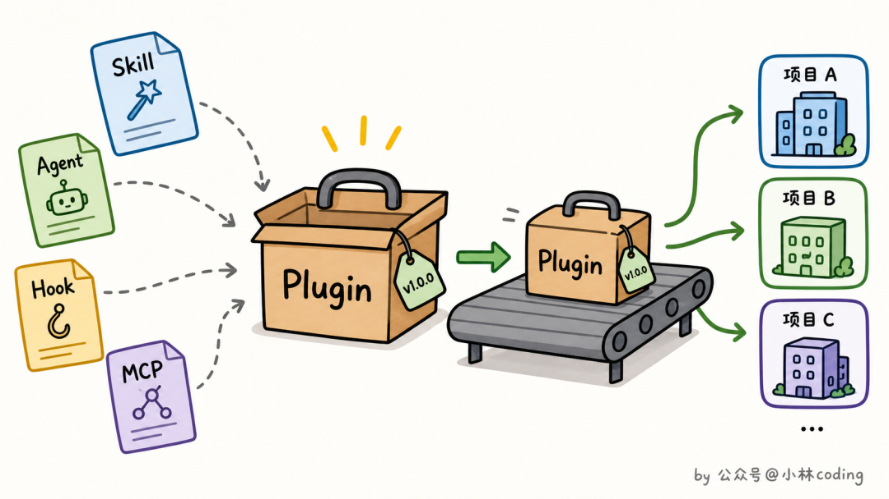
Plugin 里面装了什么？
一个 Plugin 就是一个约定好结构的文件夹。
plugin.json 是身份证，写清楚名字和版本。剩下几个目录，就是把前面几章那些散装配置按类别归位。你会发现没有任何新概念，Plugin 纯粹是个收纳盒。
分发靠 marketplace。它可以就是一个 git 仓库，团队自己建一个，把插件放进去。使用的人先把这个仓库登记进来。
登记完，这个仓库里的插件就都能看到了，挑想要的装就行。跟手机上「先添加应用商店，再从里面下应用」一个流程。
举个例子，把前面这些配置装进一个 Plugin
咱们一路走下来，手上已经有这么几样东西了。审查清单 Skill、code-reviewer Subagent、格式化和敏感文件的 Hooks、GitHub 的 MCP 接入。
我把它们按上面的结构归好位，起名 my-review-kit，推到团队的 marketplace 仓库。同事那边就一条命令的事。
装完，他的 Claude Code 立刻就有了整套审查能力，跟我这边一模一样。我后续更新清单，发个新版本，他更新一下就同步了。
开篇那个「每天失忆的新同事」，到这里已经变成一个带着完整工装、可以批量复制的老师傅。
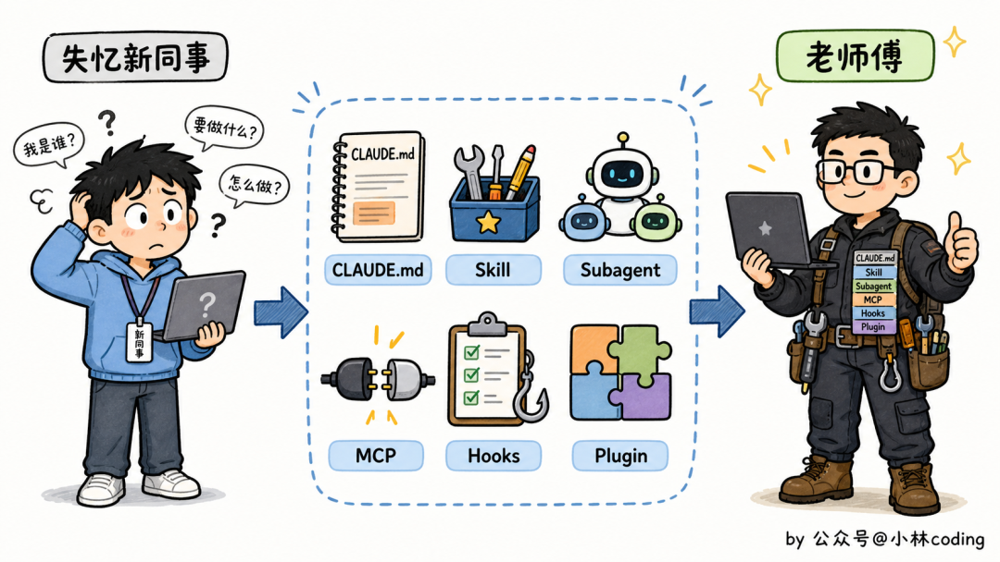
不过有一说一，安全这根弦得绷着。
装别人的 Plugin，跟把来路不明的 U 盘插进公司电脑是一个性质的事。里面的 Hook 能在你机器上执行任意命令，MCP 配置能连外部服务。装之前看看来源，团队内部或者靠谱的开源项目再装，野生插件别乱插。
────07｜六件套怎么配合打一套完整的？────
最后咱们把镜头拉远，看一次完整的配合。
场景就用团队里最日常的，一次代码审查加修改。
会话一开，CLAUDE.md 先进场。这一步你是完全无感的，但 Claude 已经知道这个项目用什么、忌什么了。
然后你敲了一句「审一下今天这个 PR」。
就这一句话，后面其实发生了不少事。MCP 先把 PR 的改动从 GitHub 拉下来。审查的活呢，不在主对话里干，派给了 code-reviewer Subagent。这个 Subagent 手里还拿着 code-review Skill 里那份团队清单，在自己的上下文里逐个文件过。
那你在主对话里看到的是什么？就一份干干净净的审查结论。搜了多少文件、读了多少代码，你全程不用看。
假设审出三个问题，Claude 接着动手修。这时候 Hook 开始上班了，改一个文件就跟着跑一遍格式化，没人提醒它，也不靠它自觉。中途它想顺手动一下配置文件里的密钥，被拦截 Hook 摁住了。
修完，审查意见通过 MCP 评论回 PR。收工。
还有一个细节，我觉得最有意思。上面这一整套配置，你可能压根没亲手配过，就是上周从团队 marketplace 装的那个 Plugin，全组人手一份，一字不差。
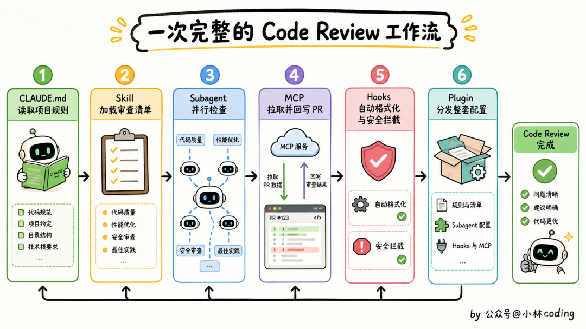
一条流程走完，每个能力各干各的活，少一样都别扭。
最后送一张速查表，以后遇到具体问题，先对号入座再动手。
────最后────
写完这篇，我自己有个挺深的感触。
大家聊 AI 编程，十句里有八句在聊模型，哪家又发新版了，跑分又涨了多少。这些我也天天刷。但讲真，真正拉开使用效果差距的，往往压根不在模型。
你想想，同一个 Claude Code，有人用出来是个每天失忆的实习生。也有人用出来，是一支带着知识库、纪律和外部系统权限的工程团队。
差在哪？模型是同一个模型，差的就是这套脚手架。
模型决定它「能」做到什么。能不能「稳定」做到，看你搭的架子。
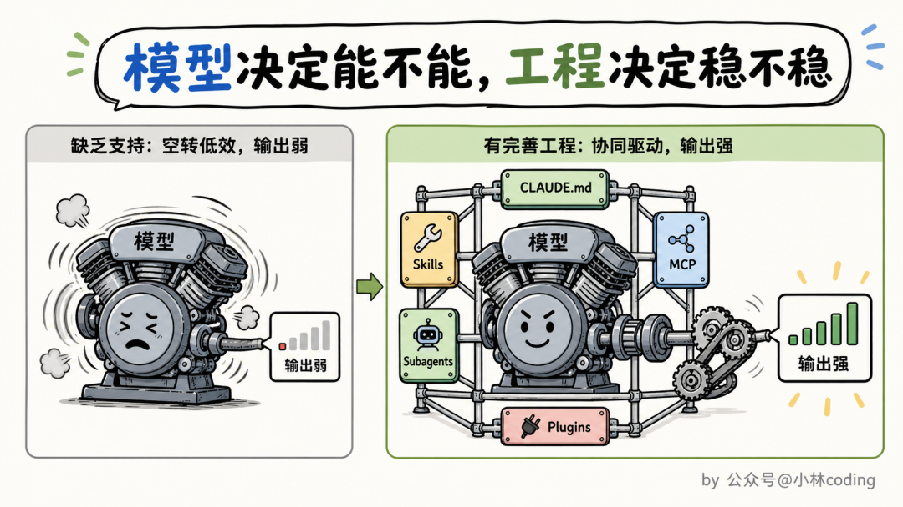
而且你发现没有，这六件套背后的思路全都不新鲜。入职手册、翻书查资料、团队分工、标准接口、门禁系统、包管理，全是软件工程和团队管理里玩了几十年的老经验。
AI 变强了，但让 AI 好好干活的方法，还是那些让人好好干活的方法。
所以别光盯着模型跑分了，回去把脚手架搭起来。工具明年可能又换一茬，这个思路丢不了。
推荐阅读：
万字长文图解 Claude Code ｜ 怎么写好 CLAUDE.md
万字长文图解Claude Code ｜ 大型代码仓库的最佳实践
万字长文图解Claude Code ｜ Skills 最佳实践
万字长文图解 Claude Code 源码：记忆机制、上下文窗口管理机制等
万字长文图解 Claude Code 源码：多Agent实现机制
万字长文图解 Claude Code 源码：上下文窗口管理机制
万字长文图解Claude Code：主循环 Query 流程
万字长文图解 Claude Code 源码：为什么不用RAG检索代码，而是用grep？
万字长文图解 Claude Code 源码：Skill 机制
----
✅小林图解网站： xiaolincoding.com
✅大模型面试题：xiaolinnote.com
✅Agent训练营：转行去做Agent开发了